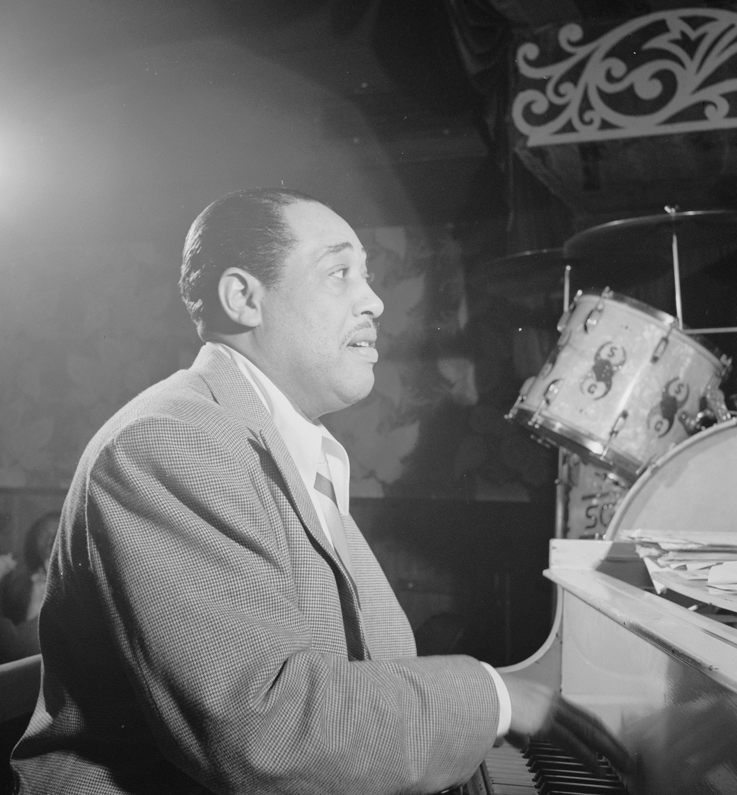

Charlie Parker playing the alto saxophone backstage at Carnegie Hall
The creation of Jazz music in the early 20th centruy was a new and innovative step in American culture. Jazz was a turning point in the sense that it strayed from the straight-timed music at the time in favor for swing and syncopated rythms, and shifted popular music towards the formation of Blues, Rock, and other forms of popular music.
The Harlem Renaissance contributed greatly to the rise of Jazz. During this time black cultural expression increased, leading to increased exposure of Jazz music. New exoression in theatre, music, and art fluorished in the black community. The Harlem Renaissance allowed black musicians to thrive in small jazz clubs, and led to the inspiration of styles of jazz.ex: Afro-Cuban, Latin, Bebop. Prominent Jazz artists like Duke Ellington, Charles Mingus, Thad Jones, Count Basie, Louis Armstrong, and many more African American musicians formed jazz combos and ensembles and performed at venues which often times denied access to African American customers. In this way, Jazz allowed African American music and culture to be more expressed than ever before, especially with the rise of black artists during the Harlem Renaissance.
Jazz captivated audiences with the use of syncopated rythms over straight-timed notes. Jazz was a turning point a sense that it strayed away from musical norms at the time, but nevertheless gained popularity along with the culture of the roaring 20s. The new, exciting music was popular in clubs and among the common people, quickly became infused in popular music.
Duke Ellington performin at the Aquarium club in New York
"Straight musicians and their friends can say what they wish about jazz, can say that it is not music, and that there is no harmony in it and so on, but just the same, there is something in it, rhythm, or whatever you choose to call it, that gets into the blood. I have been in theaters when a good jazz number is played, and I can hardly keep my feet still. Anyone who can really dance will respond the same way."
-"'Jazz? It Tickles This Bird's Feet So They Just Won't Behave' (The Washington Times, September 12, 1920)